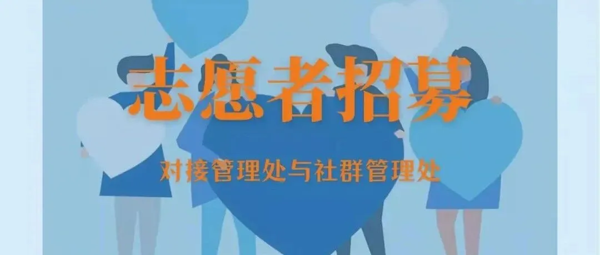
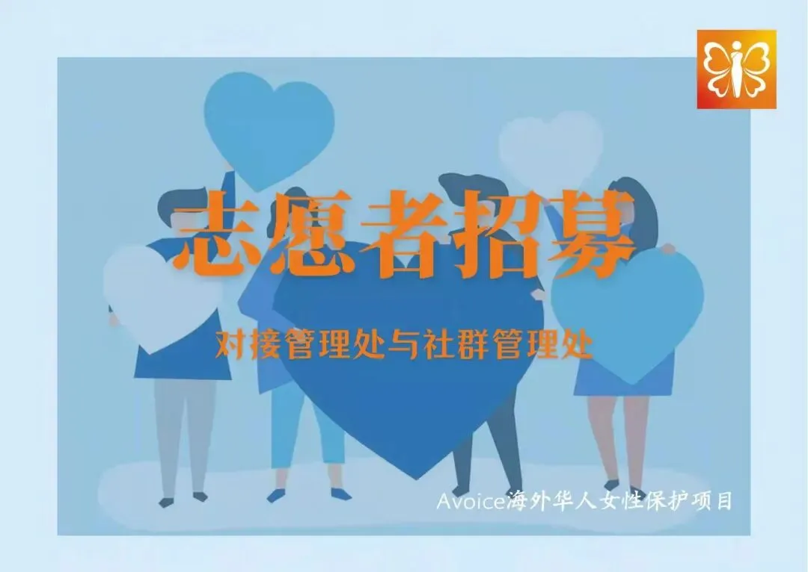
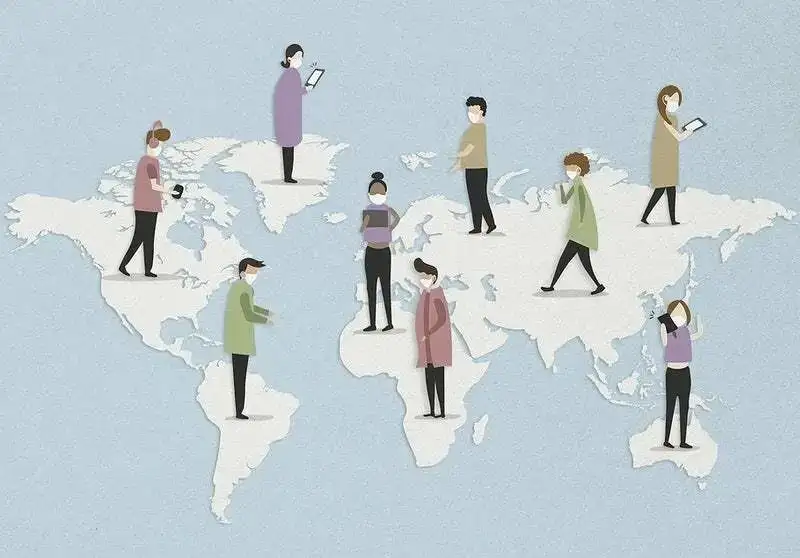
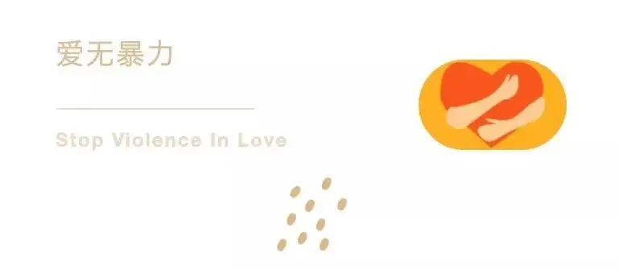

01
我们是谁
Avoice海外华人女性保护项目
Avoice海外华人女性保护项目致力于消除性别暴力、促进性别平等，为面临家暴威胁的海外华侨华人女性提供及时、持续的保护和救助。
项目源于2020年新冠疫情期间的一次国际调查研究，热心公益的中国留学生发现疫情加剧了海外华人女性遭受的家暴风险，由此积极展开行动，与政府部门、海外华人组织、社会组织、行业专家等建立合作网络，联合更广泛的青年公益力量，倡导大众对家暴困境中华人女性的关注和支持，帮助她们从家暴的受害者，成长为促进性别平等的倡导者和实践者。
2021年10月起，项目由上海市华侨事业发展基金会 提供募款资质、资金和项目管理，以及全方位的公益支持，携手努力共建“爱与平等的海外华人女性家园”。
项目在比利时开启试点，力图建立一个广泛有效的华人女性家暴救助网络。迄今为止，比利时试点项目顺利完成，并已将此项目模式推广至欧洲全部国家和北美部分国家。未来三年，项目将以北美、澳洲和东南亚为主要地区进行推广。
项目简称“Avoice”取自Against Violence to Overseas Chinese Women Program(海外华人女性保护项目的英文名称），意为用女性之声传递发展愿景，用青年之声呼吁性别平等，以昭然赤心宣告人文理念，以不渝之志唱彻使命长歌，致力于将公益的万千发声汇入到全球推进性别平等可持续发展目标的万钧宏音中！
请通过以下链接，了解更多关于Avoice海外华人女性保护项目的信息。

为了进一步扩大项目规模，服务更多面临家暴威胁的海外华人女性，现招募救助管理处与社群管理处志愿者。
如果你对消除家庭暴力、推动性别平等抱有热情；如果你期待在国际化视野的公益项目中获得实践机会和成长 ，那么，欢迎你加入Avoice海外华人女性保护项目，结识分布于多个国家的优秀志愿者和行业内的资深专家导师，让青年思想和公益情怀尽情碰撞，用青年力量共建“爱与平等的海外华人女性家园”。

02
招募岗位
以下所有岗位均可远程工作，地点不限。
Avoice海外华人女性保护项目
个案管理志愿者（5名）
对接管理处
响应家暴受害者求助，协调统筹相关部门，对接救助资源，并进行全程个案管理和后续跟踪支持。
岗位介绍
参与制定个案管理流程；
个案对接及受助人信息记录；
组建个案救助小组；
根据受助人需求协调统筹相关资源，并对接项目内外部相应部门，包括但不限于法律、心理、医疗、语言、临时庇护等；
个案救助结束后的跟踪支持。
任职要求
1. 社会学、心理学、社工等专业优先；
2. 有与反家暴相关的工作/志愿服务经验、尤其是个案管理经验者优先；
3. 基本的英语听说读写能力，能使用其他小语种进行工作者优先；
4. 具有良好的团队意识，组织协调能力、沟通能力和时间管理能力；
5. 认真、负责、耐心；
6. 对欧洲、北美、澳洲、东南亚等地的基本情况有所了解，或者愿意投入时间了解。
Avoice海外华人女性保护项目
社群管理处负责人（1-2名）
社群管理处
建立、运营女性互助社群，保持社群活跃度，扩大社群规模，组织开展线上线下女性赋能活动。
岗位介绍
制定部门月度及年度工作计划；
制定和完善部门工作制度和流程；
制定和完善女性互助社群管理手册；
制定社群活动计划并督导实施；
管理部门成员并分配工作任务；
负责完成部门月报及其他工作报告；
负责完成部门成员的考勤、评级和积分；
组织部门会议、培训及团建活动。
Avoice海外华人女性保护项目
社群运营志愿者（5名）
社群管理处
建立、运营女性互助社群，保持社群活跃度，扩大社群规模，组织开展线上线下女性赋能活动。
岗位介绍
女性互助社群运营与维护；
按照社群活动计划组织开展相关活动；
社群内的信息发布与日常互动；
社群成员的单独沟通与咨询回应；
社群活动信息记录。
任职要求：
1. 社会学、社工、传播学、心理学等专业优先；
2. 有与反家暴、社群管理相关的工作/志愿服务经验者优先；
3. 擅长策划、组织、主持开展线上活动；
4. 基本的英语听说读写能力；
5. 具有良好的团队意识、沟通能力和时间管理能力；
6. 认真、负责、耐心。
03
你将收获
工作表现达标的志愿者，将会
获得志愿服务/实习证明
参与性别平等、女性保护与发展、青年赋能等相关领域的课题研究
参与评选季度和年度优秀志愿者
参加内外部的能力建设和交流活动
参加志愿者团建活动
使用志愿者积分兑换项目周边产品及学习资料和工具
担任项目管理职位，加入国际青年志愿者网络校友会
得到项目专家顾问的指导和推荐信
项目合作伙伴的实习内推
与国内外公益机构、学术机构、基金会的合作交流机会
与来自世界各地、志同道合的伙伴一起学习成长

04
申请流程
01
提交简历
02
简历初选
03
面试
04
录取通知
05
入职培训
05
简历提交通道
扫描下方二维码填写表单
申请截止日期：2021年12月20日
文字 I Avoice Team
排版 I 十一
图片 I rawpixel
1.需要相关咨询和帮扶
2.想要获得Avoice采写发声支持
3.想要加入海外华人女性保护社群
4.想要合作或者为项目提供资源
欢迎添加Avoice女性保护小助手微信：Avoice-WomenAid

Avoice期望关注女性权益的您能够帮助我们转发此推文至海外华人社群、微信朋友圈等平台。
您的每一次传播都可能让我们触及到一位需要帮助的女性，您的每一次发声都可能是一位受家暴的她获得长期援助支持的起点。点击在看关注我们，贡献自己的一点力量！
爱无暴力
Stop Violence In Love

转载请联系本公众号
微信公众号：海外华人女性保护项目
微博：海外华人女性保护项目
知乎：Avoice华人女性保护
B站：Avoice华人女性保护
快手：Avoice华人女性保护
抖音：海外华人女性保护项目
Instagram：avoice_womenaid
领英：Avoice海外华人女性保护
邮箱：Av[email protected]